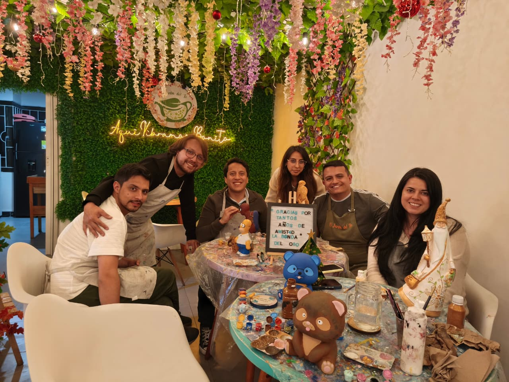

Acerca de Nosotros
Nuestro camino comenzó en 2021 en el corazón de Bogotá con una idea simple pero poderosa: crear un espacio de calma donde las personas pudieran desconectarse del ajetreo diario. Inicialmente nos enfocamos en promover la cultura del té, pero pronto descubrimos que nuestros clientes buscaban algo más profundo.
La evolución fue orgánica e inspiradora. Integramos experiencias como pintura creativa, lecturas de tarot y sesiones de astrología, transformándonos en un verdadero jardín donde la mente, el cuerpo y el espíritu encuentran armonía. Cada cambio nos acercó más a nuestra misión de crear momentos inolvidables.
Visión
A 2028 posicionarnos como referente nacional en cafés de experiencias.
Misión
Crear experiencias memorables a través de productos gastronómicos de alta calidad con actividades que promuevan el bienestar, un servicio cálido, cercano y profesional en cada interacción convirtiendo cada visita en un momento de conexión, inspiración y felicidad genuina.
¿Cómo llegar?
📍 Dirección: Bogotá, Colombia (Chapinero). Calle 71 # 11-12, Quinta Camacho.
Horario:
Lunes a domingos: 09:00 AM – 8:00 PM
Festivos entre semana: 11:00 AM – 8:00 PM
Google Maps